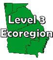
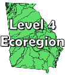
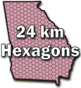
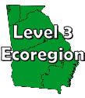
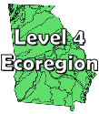
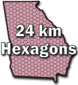

This page has information about the location of rare natural elements. The locations have been generalized (made less precise) by assigning various map units to the locations. If you require exact locations of rare natural elements, please submit an information request. For details, see instructions at Requesting Information for Sites
 





These zipped shapefiles can be imported into most GIS programs including ArcGIS, ArcPro, QGIS and many more. The files contain many duplicate area polygons, one for each rare natural element located within a given area. In a GIS program, the user can select one or more polygons and derive a list of elements within those areas. The data can then be copied to other databases or spreadsheets to be further processed and analyzed. The shapefiles tend to be rather large so they may run slow in your GIS program. The approximate file size is given for each.
These CSV (comma separated value) files of rare element locations can be imported into most database, spreadsheet or GIS programs including Excel, Access, ArcGIS, QGIS, Open Office Calc and many more. The user can then filter and sort the data by many criteria as well as join the data to map layer shapefiles below to do GIS analysis.
These zipped ESRI shapefiles can be joined with CSV element location files above to do GIS analysis and make maps.
When opened in Google Earth, these KMZ (zipped KML) map layers allow the user to click on locations and get rare natural elements found there. This works best if the Google Earth menu item Tools/Options/General Tab/Display is set to "Show results in external browser".